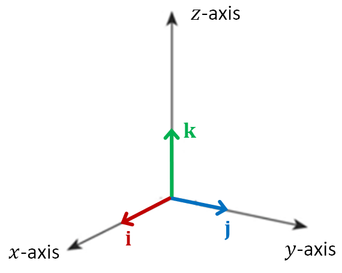

Lesson 1: Unit Vectors and Standard Basis Vectors
A unit vector is a vector with a magnitude of one.
An Example
Find the magnitude of the vector below. Then determine if the vector is a unit vector.
The magnitude of a position vector in \(\mathbb{R}^3\) is the result of the formula below. This follows from the distance formula. It is the distance from the origin to the point \((v_1, v_2, v_3)\).
Because the magnitude is not one this is not a unit vector.
An Example
Find the magnitude of the vector below. Then determine if the vector is a unit vector.
The magnitude of a position vector in \(\mathbb{R}^2\) is the result of the formula below. This follows from the distance formula. It is the distance from the origin to the point \((v_1, v_2)\).
Because the magnitude is one this is a unit vector.
Given a nonzero vector \(\vec{v}\), this is the process of finding a new vector, with the same direction as \(\vec{v}\) but with a magnitude of one. To normalize a vector, we divide the vector by its magnitude.
The unit vector in the direction of \(\vec{v}\) is often written \(\hat{v}\).
Unit Vector in the Direction of \(\vec{v}\)
An Example
Normalize the below vector.
These are the unit vectors in the direction of the positive coordinate axes. They are written in several ways, including with hats, which is common in physics.

Write the vector \(2\mathbf{i} + 3\mathbf{j} - 4\mathbf{k}\) in angle bracket notation.
Notice the coefficients of the standard basis vectors are the components of the vector.
Given the below, find \(\vec{v} + \vec{w}\).
Recall: We add vectors by combining the corresponding components.